Harmonize environmental data and sequencing identifiers
Tara Oceans workflow
1 Setup
This code loads required libraries and sets global variables
2 Read data
Read NCBI BioSample data with unique Tara Ocean Barcodes
Read previously saved environmental data and metadata downloaded from Pangaea.de
Show/hide code
# tara stations
PANGAEA_842237 <- arrow::read_parquet(here::here("_data_raw", "tara", "pangaea", "PANGAEA_842237.parquet"))
# carbonate chemistry
PANGAEA_875567 <- arrow::read_parquet(here::here("_data_raw", "tara", "pangaea", "PANGAEA_875567.parquet"))
# nutrients
PANGAEA_875575 <- arrow::read_parquet(here::here("_data_raw", "tara", "pangaea", "PANGAEA_875575.parquet"))
# phytoplankton pigments
PANGAEA_875569 <- arrow::read_parquet(here::here("_data_raw", "tara", "pangaea", "PANGAEA_875569.parquet"))
# CTD sensor data
PANGAEA_875576 <- arrow::read_parquet(here::here("_data_raw", "tara", "pangaea", "PANGAEA_875576.parquet"))
# mesoscale features
PANGAEA_875577 <- arrow::read_parquet(here::here("_data_raw", "tara", "pangaea", "PANGAEA_875577.parquet"))
# whole water column features
PANGAEA_875579 <- arrow::read_parquet(here::here("_data_raw", "tara", "pangaea", "PANGAEA_875579.parquet"))3 Pangaea environmental data: Collate, filter, and harmonize
In the final metagenomic tables we are interested in the following environmental variables:
- Density
- Temperature
- Salinity
- Chlorophyll a
- Dissolved oxygen (O2)
- Total inorganic nitrogen (NO3 + NO2)
- Nitrite (NO2)
- Silica (SiO2)
- Phosphate (PO4)
- Total dissolved iron (FeT)
The most relevant Pangaea datasets are those of the bottle nutrient data and the CTD sensor data. Thus we need to access the following environmental variables from various Pangaea dataframes for the final product
| Variable | Dataset | Variable | Note |
|---|---|---|---|
| Density | Sensors, in situ (PANGAEA.875576) | PANGAEA.875576_047 | |
| Salinity | Sensors, in situ (PANGAEA.875576) | PANGAEA.875576_037 | |
| Temperature | Sensors, in situ (PANGAEA.875576) | PANGAEA.875576_027 | |
| Dissolved Oxygen | Sensors, in situ (PANGAEA.875576) | PANGAEA.875576_057 | |
| Chlorophyll a | Sensors, in situ (PANGAEA.875576) | PANGAEA.875576_077 | |
| Dissolved inorganic nitrogen (DIN = NO3 + NO2) | Nutrients, bottles (PANGAEA.875575) | PANGAEA.875575_031 | |
| Nitrite (NO2) | Nutrients, bottles (PANGAEA.875575) | PANGAEA.875575_021 | |
| Phosphate (PO4) | Nutrients, bottles (PANGAEA.875575) | PANGAEA.875575_026 | |
| Silica (SiO2) | Nutrients, bottles (PANGAEA.875575) | PANGAEA.875575_036 | |
| Darwin Model Total dissolved Iron (FeT) | Modeled variables (PANGAEA.875577) | PANGAEA.875577_039 | from 5 meters, not the depth of the sample |
| Darwin Model NO2 | Modeled variables (PANGAEA.875577) | PANGAEA.875577_043 | from 5 meters, not the depth of the sample |
| Darwin Model DIN | Modeled variables (PANGAEA.875577) | PANGAEA.875577_045 | from 5 meters, not the depth of the sample |
3.1 Inspect PANGAEA.875579
At one point we were interested in the variables below and whether they could supplement any of the missing data from the bottles. It was initially not clear to me what PANGAEA.875579 contains, but after closer inspection and discussion with Federico Ibarbalz it appears that nutrient data in this data set are summarized from the CTD senor (see analysis below). They seem to be almost identical but there are some samples where the two disagree substantially. However, the actual number of samples where a CTD measurement is missing and the measurement is present in PANGAEA.875579 is actually very small - only two or three for most variables.
| Variable | Dataset | Variable | Note |
|---|---|---|---|
| Temp @ 10 meters | Water column (PANGAEA.875579) | PANGAEA.875579_054 | taken from CTD sensor, same as in PANGAEA.875576 |
| Temp @ mixed layer | Water column (PANGAEA.875579) | PANGAEA.875579_057 | taken from CTD sensor, same as in PANGAEA.875576 |
| Temp @ DCM | Water column (PANGAEA.875579) | PANGAEA.875579_059 | taken from CTD sensor, same as in PANGAEA.875576 |
| Salinity @ 10 meters | Water column (PANGAEA.875579) | PANGAEA.875579_064 | taken from CTD sensor, same as in PANGAEA.875576 |
| Salinity @ mixed layer | Water column (PANGAEA.875579) | PANGAEA.875579_067 | taken from CTD sensor, same as in PANGAEA.875576 |
| Salinity @ DCM | Water column (PANGAEA.875579) | PANGAEA.875579_069 | taken from CTD sensor, same as in PANGAEA.875576 |
| Density @ 10 meters | Water column (PANGAEA.875579) | PANGAEA.875579_074 | taken from CTD sensor, same as in PANGAEA.875576 |
| Density @ mixed layer | Water column (PANGAEA.875579) | PANGAEA.875579_077 | taken from CTD sensor, same as in PANGAEA.875576 |
| Density @ DCM | Water column (PANGAEA.875579) | PANGAEA.875579_079 | taken from CTD sensor, same as in PANGAEA.875576 |
| Chlorophyll a @ 10 meters | Water column (PANGAEA.875579) | PANGAEA.875579_094 | taken from CTD sensor, same as in PANGAEA.875576 |
| Chlorophyll a @ mixed layer | Water column (PANGAEA.875579) | PANGAEA.875579_097 | taken from CTD sensor, same as in PANGAEA.875576 |
| Chlorophyll a @ DCM | Water column (PANGAEA.875579) | PANGAEA.875579_099 | taken from CTD sensor, same as in PANGAEA.875576 |
| Dissolved Oxygen @ 10 meters | Water column (PANGAEA.875579) | PANGAEA.875579_104 | taken from CTD sensor, same as in PANGAEA.875576 |
| Dissolved Oxygen @ mixed layer | Water column (PANGAEA.875579) | PANGAEA.875579_107 | taken from CTD sensor, same as in PANGAEA.875576 |
| Dissolved Oxygen @ DCM | Water column (PANGAEA.875579) | PANGAEA.875579_109 | taken from CTD sensor, same as in PANGAEA.875576 |
| DIN @ 10 meters | Water column (PANGAEA.875579) | PANGAEA.875579_114 | taken from CTD sensor, same as in PANGAEA.875576 |
| DIN @ mixed layer | Water column (PANGAEA.875579) | PANGAEA.875579_117 | taken from CTD sensor, same as in PANGAEA.875576 |
| DIN @ DCM | Water column (PANGAEA.875579) | PANGAEA.875579_119 | taken from CTD sensor, same as in PANGAEA.875576 |
3.1.1 1:1 Plots
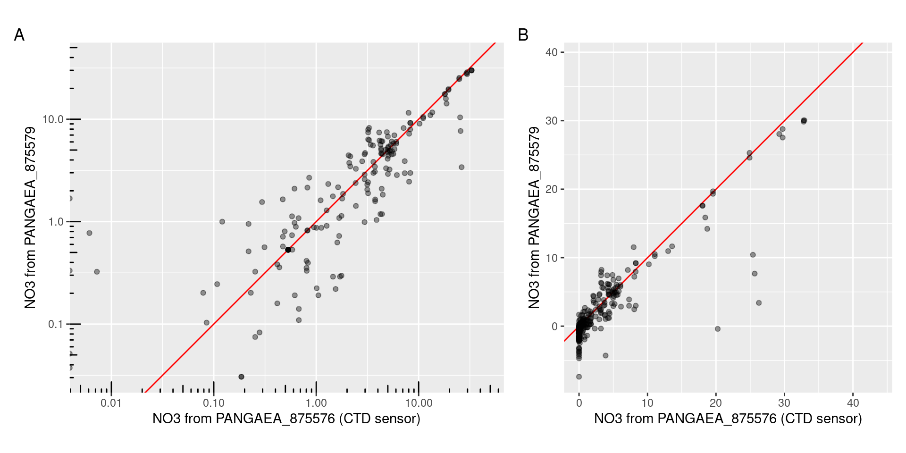
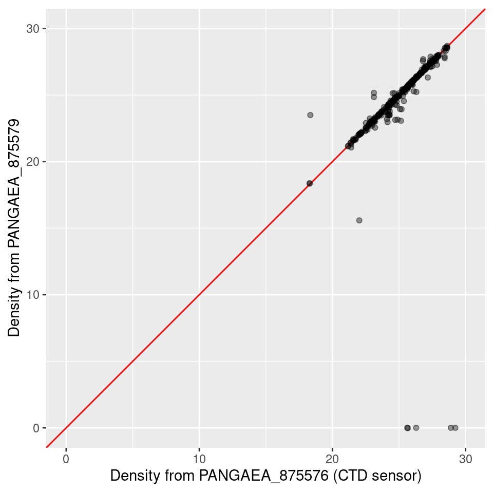
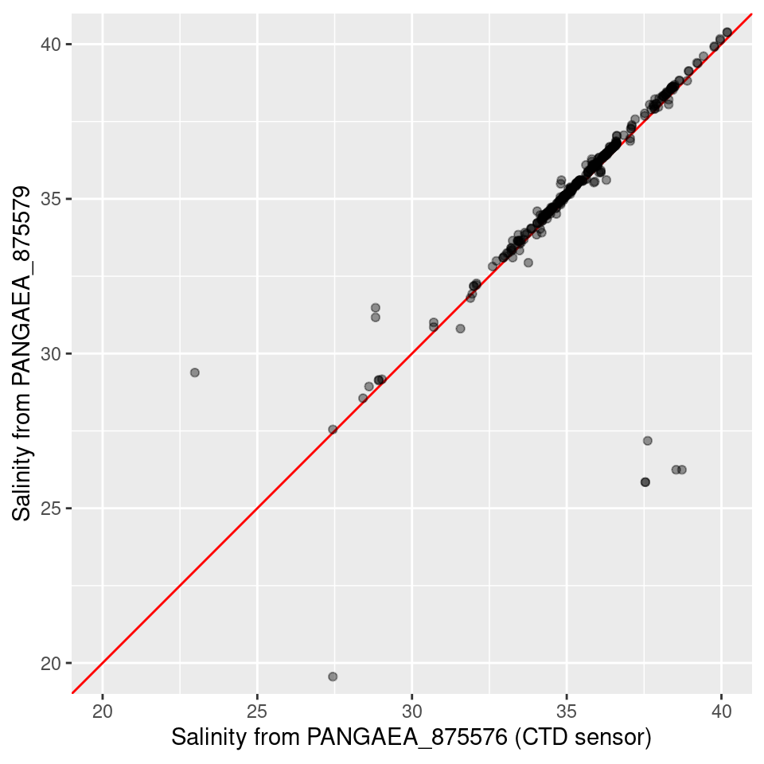
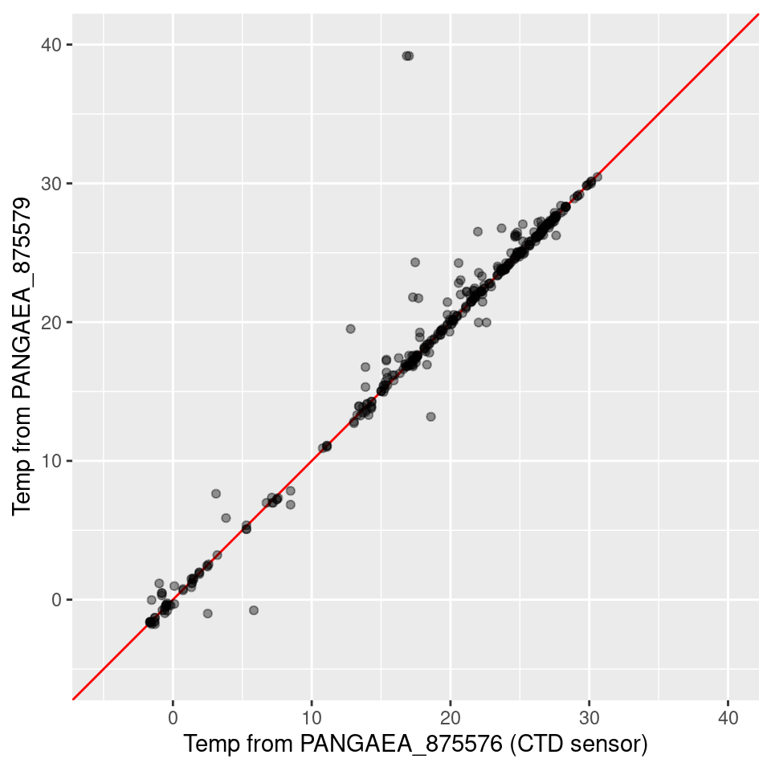
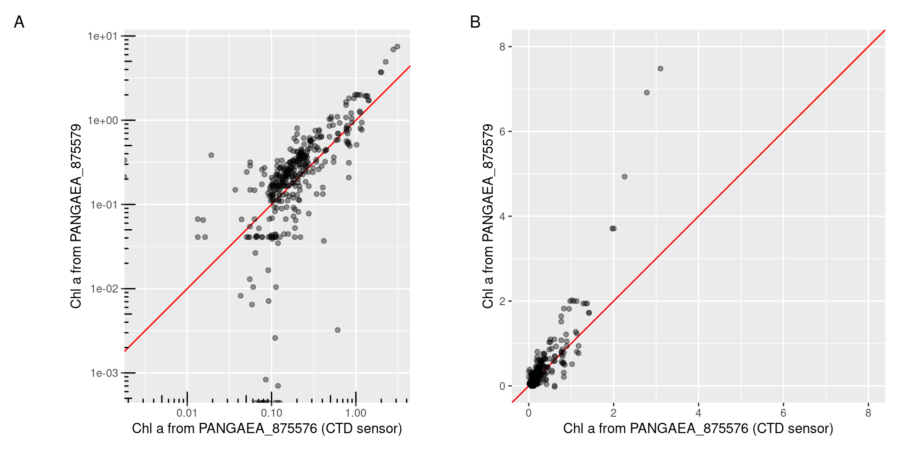
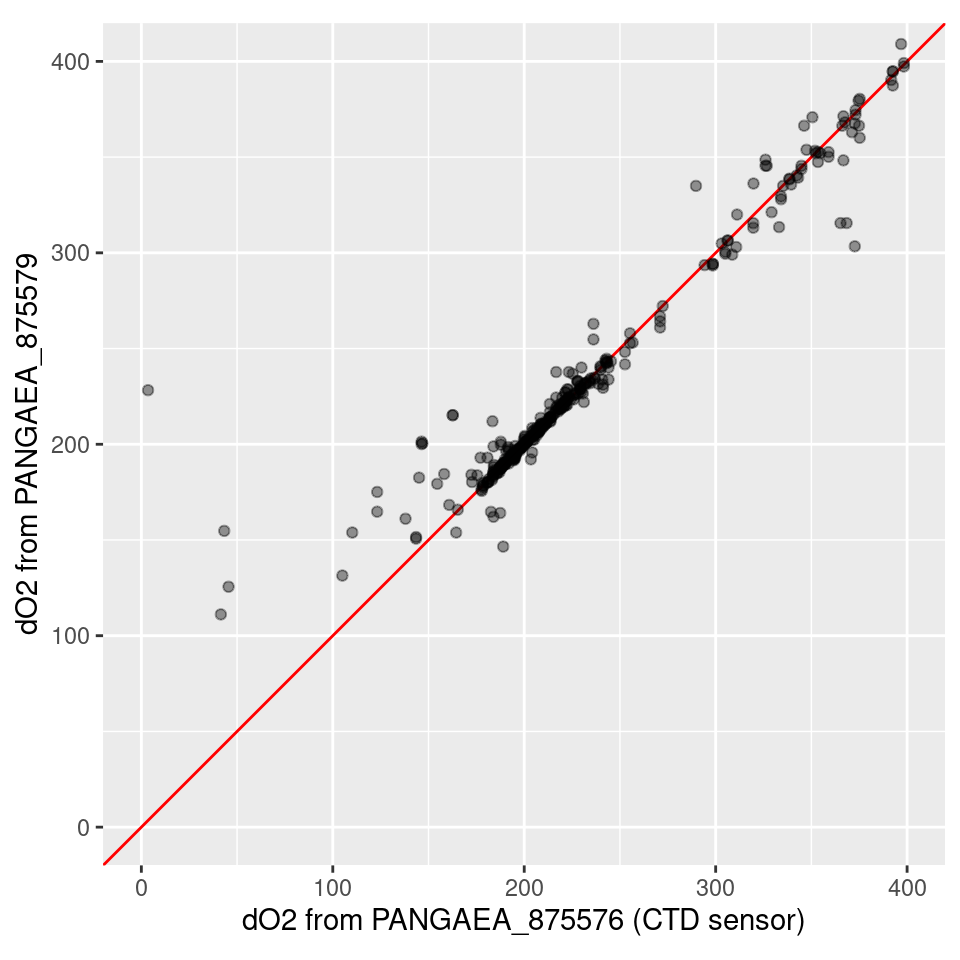
3.1.2 Samples missing
There are basically no samples that have data in the “watercolumn” data set but lack data for the corresponding sample in the CTD data set. These tables just show the samples that are missing == TRUE from PANGAEA.875576 (the CTD dataset) but availabe in PANGAEA.875579 missing == FALSE
Nitrate
Density
Salinity
Chlorophyll a
Dissolved Oxygen
3.2 Combine all Pangaea datasets with BioSamples
Now we’ll put the Pangaea data together (excluding the weird PANGAEA_875579 dataset)
Show/hide code
tara_biosamples_joined01 <- left_join(tara_biosamples, PANGAEA_875575, by = join_by(tara_barcode_num, tara_station)) %>%
left_join(dplyr::select(PANGAEA_875576, tara_barcode_num, tara_station, date_time, 21:last_col()),
by = join_by(tara_barcode_num, tara_station)) %>%
left_join(dplyr::select(PANGAEA_875569, tara_barcode_num, tara_station, 21:last_col()),
by = join_by(tara_barcode_num, tara_station)) %>%
left_join(dplyr::select(PANGAEA_875577, tara_barcode_num, tara_station, 21:last_col()), by = join_by(tara_barcode_num, tara_station)) %>%
left_join(dplyr::select(PANGAEA_875579, tara_barcode_num, tara_station, 21:last_col()), by = join_by(tara_barcode_num, tara_station)) %>%
left_join(dplyr::select(PANGAEA_842237, tara_station, latitude, longitude), by = join_by(tara_station))3.3 Fill missing depth observations with adjacent data
There are 7 cases where there is not single recorded depth for an observation, but rather a depth range (depth_min to depth_max).
Show/hide code
Later it will make our lives easier if there are actual values for these depths and not NAs. We fill these depths with the mean of the depth range.
Also in some cases nutrients or sensor data will not be joined even though there is a measurement at that particular station/depth. We will group by station and depth and then fill those observations from the same station/depth.
3.4 Relationship between CTD and bottle variables
There are only two variables that were measured both via the CTD and in bottle samples. These are NO3 and Chlorophyll A, both of which are measured using an optical sensor on the CTD. NO3 in bottles is measured follow standard colormetric nutrient analysis and Chl A is measured using HPLC.
tara_barcode_num - Unique TARA barcode number registered at PANGAEA, Data Publisher for Earth and Environmental Science (www.pangaea.de) - sra_acc_num - NCBI Sequence Read Archive BioSample accession number - sra_biosample_acc_num - NCBI BioSample accession number - sra_run_acc_num - NCBI Sequence Read Archive sequencing run accession number - sra_exp_acc_num - NCBI Sequence Read Archive sequencing experiment accession number - sra_study_acc_num - NCBI BioProject accession number - biosample_acc_num - Biosample accession number registered at the EBI BioSamples database (http://www.ebi.ac.uk/biosamples/). From Pangaea - ena_acc_num - ENA sample accession number (ERS_num) registered at the European Nucleotides Archive (http://www.ebi.ac.uk/ENA/) - tara_station - Tara station identifier - env_ontology - [abbreviation], full name (ENVO:ID) from which this sample was collected terms registered at EnvO, the Environmental Ontology (http://environmentontology.org/) - latitude - Latitude of Tara station - longitude - Longitude of Tara station - date_time - Sampling date at Tara station - size_low_thresh - Lower threshold of the size fraction (µm) used on board to prepare sample - size_high_thresh - Upper threshold of the size fraction (µm) used on board to prepare sample
Show/hide code
set.seed(3549687)
jitterfun <- function(amount = NULL){
a <- jitter(rep(0, 100), amount = amount)
sample(a[a>0], 1)
}
tara_biosamples_joined02_subset <- tara_biosamples_joined02 %>%
dplyr::select(tara_barcode_num, sra_acc_num, sra_biosample_acc_num, sra_run_acc_num, sra_exp_acc_num, sra_study_acc_num,
tara_station, env_ontology, latitude, longitude, date_time, depth, size_low_thresh, size_high_thresh, depth_min, depth_max,
density_ctd=PANGAEA.875576_047, temperature_ctd=PANGAEA.875576_027, salinity_ctd=PANGAEA.875576_037, do2_ctd=PANGAEA.875576_057,
chla_bot=PANGAEA.875569_131, chla_ctd=PANGAEA.875576_067,
no3_bot=PANGAEA.875575_031, no3_ctd=PANGAEA.875576_062,
no2_bot = PANGAEA.875575_021,
po4_bot = PANGAEA.875575_026,
sio2_bot = PANGAEA.875575_036,
fet_dw_pg = PANGAEA.875577_039,
din_dw_pg = PANGAEA.875577_045,
no2_dw_pg = PANGAEA.875577_043) %>%
# offset negative values for the chl a sensor. This will allow us to correct for it later
mutate(chla_ctd = chla_ctd + abs(min(chla_ctd, na.rm=TRUE))) %>%
# add small amount of noise to zero values
mutate(chla_ctd = if_else(chla_ctd == 0, jitterfun(amount = 0.1), chla_ctd),
no3_ctd = if_else(no3_ctd == 0, jitterfun(amount = 1), no3_ctd))3.4.1 Chlorophyll A
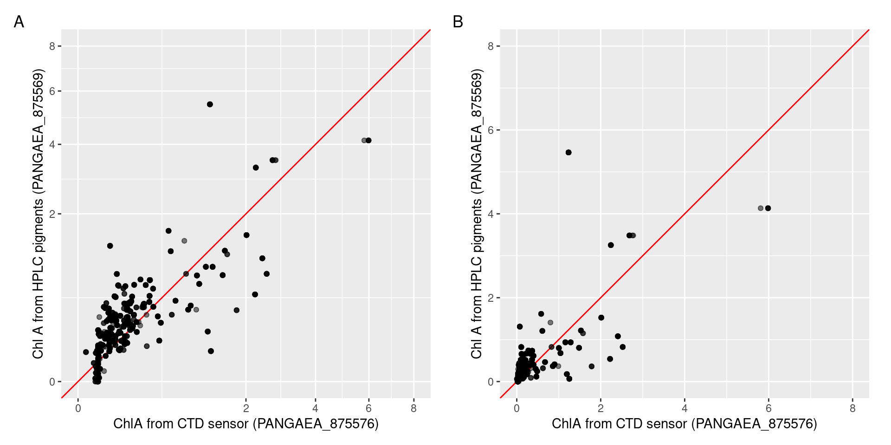
There seems to be a systematic offset for the Sensor Chl A versus that from the HPLC. Let’s examine more closely
Show/hide code
Call:
lm(formula = chla_bot ~ chla_ctd, data = tara_biosamples_joined02_subset)
Residuals:
Min 1Q Median 3Q Max
-1.2771 -0.1379 -0.0688 0.0579 4.3855
Coefficients:
Estimate Std. Error t value Pr(>|t|)
(Intercept) 0.15653 0.01483 10.56 <2e-16 ***
chla_ctd 0.74715 0.02207 33.85 <2e-16 ***
---
Signif. codes: 0 '***' 0.001 '**' 0.01 '*' 0.05 '.' 0.1 ' ' 1
Residual standard error: 0.4922 on 1373 degrees of freedom
(424 observations deleted due to missingness)
Multiple R-squared: 0.4549, Adjusted R-squared: 0.4545
F-statistic: 1146 on 1 and 1373 DF, p-value: < 2.2e-16Show/hide code
Call:
lm(formula = sqrt(chla_bot) ~ sqrt(chla_ctd), data = tara_biosamples_joined02_subset)
Residuals:
Min 1Q Median 3Q Max
-0.77636 -0.11394 -0.01402 0.11905 1.31074
Coefficients:
Estimate Std. Error t value Pr(>|t|)
(Intercept) 0.18569 0.01010 18.38 <2e-16 ***
sqrt(chla_ctd) 0.75725 0.01846 41.01 <2e-16 ***
---
Signif. codes: 0 '***' 0.001 '**' 0.01 '*' 0.05 '.' 0.1 ' ' 1
Residual standard error: 0.2286 on 1373 degrees of freedom
(424 observations deleted due to missingness)
Multiple R-squared: 0.5506, Adjusted R-squared: 0.5502
F-statistic: 1682 on 1 and 1373 DF, p-value: < 2.2e-16Show/hide code
In both cases the intercept is significantly different from 0 and the slope is significantly different from 1. The R2 of the model using square-root transformed data is higher, so we will use that model to correct CTD chlorophyll to the bottle values.
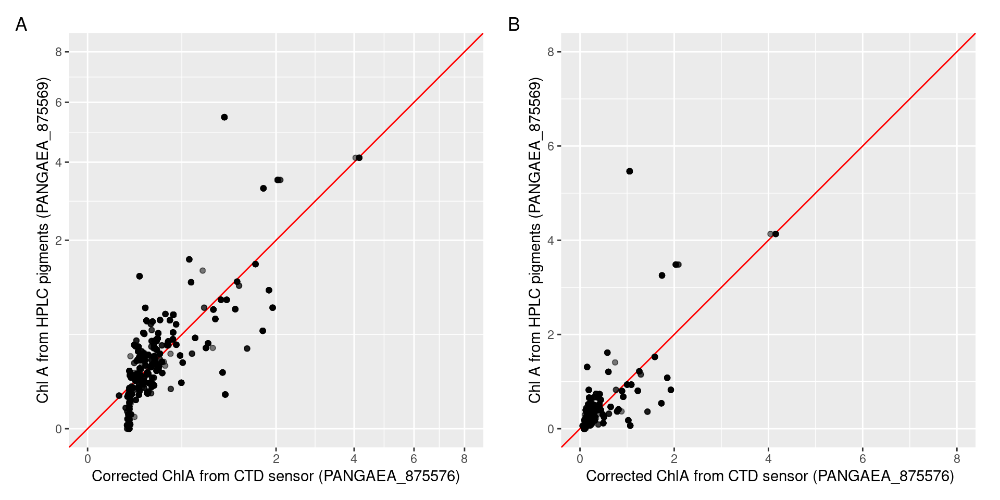
Show/hide code
Call:
lm(formula = sqrt(chla_bot) ~ sqrt(chla_ctd_cal), data = tara_biosamples_joined02_subset)
Residuals:
Min 1Q Median 3Q Max
-0.77636 -0.11394 -0.01402 0.11905 1.31074
Coefficients:
Estimate Std. Error t value Pr(>|t|)
(Intercept) 1.820e-15 1.396e-02 0.00 1
sqrt(chla_ctd_cal) 1.000e+00 2.438e-02 41.01 <2e-16 ***
---
Signif. codes: 0 '***' 0.001 '**' 0.01 '*' 0.05 '.' 0.1 ' ' 1
Residual standard error: 0.2286 on 1373 degrees of freedom
(424 observations deleted due to missingness)
Multiple R-squared: 0.5506, Adjusted R-squared: 0.5502
F-statistic: 1682 on 1 and 1373 DF, p-value: < 2.2e-16The correction seems to made the relationship between the HPLC and the sensor more like 1:1.
3.4.2 Nitrate
Show/hide code
ggplot(tara_biosamples_joined02_subset, aes(x = no3_ctd, y = no3_bot)) +
geom_abline(slope = 1, intercept = 0, color = "red") +
geom_point(alpha=0.5) +
labs(x = " NO3 from CTD sensor (PANGAEA_875576)", y = "NO3 from rosette (PANGAEA_875575)") +
scale_x_sqrt() + scale_y_sqrt() +
coord_fixed(xlim = c(0,40), ylim = c(0,40)) Warning: Removed 545 rows containing missing values or values outside the scale range
(`geom_point()`).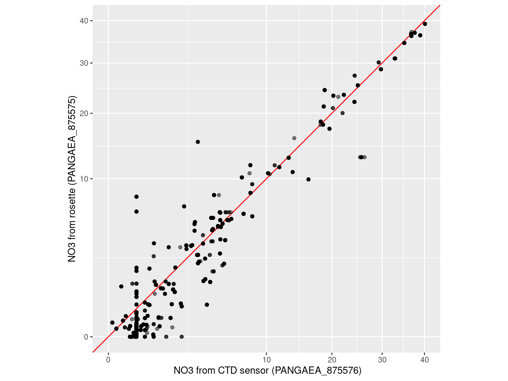
In contrast to the Chl A there doesn’t appear to be any systematic difference here (i.e., the slope appears about 1 and the intercept about 0). Let’s examine more closely
Show/hide code
Call:
lm(formula = no3_bot ~ no3_ctd, data = tara_biosamples_joined02_subset)
Residuals:
Min 1Q Median 3Q Max
-12.6819 -0.5043 -0.2707 0.4402 12.0302
Coefficients:
Estimate Std. Error t value Pr(>|t|)
(Intercept) 0.058593 0.064116 0.914 0.361
no3_ctd 0.971883 0.006208 156.553 <2e-16 ***
---
Signif. codes: 0 '***' 0.001 '**' 0.01 '*' 0.05 '.' 0.1 ' ' 1
Residual standard error: 1.939 on 1252 degrees of freedom
(545 observations deleted due to missingness)
Multiple R-squared: 0.9514, Adjusted R-squared: 0.9514
F-statistic: 2.451e+04 on 1 and 1252 DF, p-value: < 2.2e-16The intercept is not statistically different from 0. The slope is approximately 0.97 which according to emmeans::emtrands is statistically different from 1, but I think the effect size here is not appreciable and doesn’t warrant any kind of correction factor like we used for Chl A in the section above.
3.5 Fill missing bottle observations
Now we will fill missing bottle nutrient observations for NO3 and Chlorophyll A with (corrected) observations taken from the CTD sensor (PANGAEA.875576)
We will take bottle samples as the starting point (nutrients = PANGAEA_875575, pigments = PANGAEA.875569).
If a bottle observation is missing for NO3 (PANGAEA.875575_031) fill with the closest CTD sensor observation (PANGAEA.875576_062). If a bottle observation for total chlorophyll a is missing (PANGAEA.875569_131) fill it with the closest CTD sensor observation (PANGAEA.875576_067).
Show/hide code
simple_replace <- function(.data, varname, target, replace){
.data %>%
mutate("{varname}" := if_else(is.na({{ target }}), {{ replace }}, {{ target }})) %>%
relocate({varname}, .before = {{ target }} )
}
tara_biosamples_joined02_subset_replaced <- tara_biosamples_joined02_subset %>%
simple_replace("no3_bot_ctd", no3_bot, no3_ctd) %>%
simple_replace("chla_bot_ctd", chla_bot, chla_ctd_cal) %>%
relocate(chla_ctd_cal, .after=chla_ctd)Fix some stuff with dates
Show/hide code
statistical_mode <- function(x) {
ux <- unique(x)
ux[which.max(tabulate(match(x, ux)))]
}
tara_biosamples_joined02_subset_replaced <- tara_biosamples_joined02_subset_replaced %>%
# convert the date_time to only date. This ensures that when you are grouping
# by tara_station and date_time that you don't expand the results to include
# multiple times within a single station
mutate(date_time = lubridate::as_date(stringr::str_extract(date_time, "^\\d{4}-\\d{2}-\\d{2}"))) %>%
group_by(tara_station) %>%
# in the case that there are multiple days sampled at a station take the most
# common day to represent the whole station
mutate(date_time = statistical_mode(date_time)) %>%
ungroup()Now after we have filled observations with data internally available from the Tara Pangaea collection, we need to find which stations still have missing data observations for one or more these variables.
Show/hide code
target_vars <- c("density_ctd", "temperature_ctd", "salinity_ctd", "do2_ctd", "chla_bot_ctd", "no3_bot_ctd", "no2_bot", "po4_bot", "sio2_bot")
missing <- tara_biosamples_joined02_subset_replaced %>%
filter(if_any(all_of(target_vars), is.na)) %>%
summarise(across(all_of(target_vars), ~any(is.na(.))),
.by = c(tara_station, env_ontology, depth, depth_min, depth_max, latitude, longitude, date_time))Most missing observations are because of PO4 and SiO2
And this is for 57 different tara stations
This level of completion is pretty OK I think. I will make available this current data set corresponding to all data collated from Pangaea. This represents a “master record” for Tara and uses only data that Tara people themselves have made available in Pangaea.
3.6 Additional geographic infofrmation
Next we want to add some geographic information to the dataset like longhurst code, ocean identifier, and the distance to the coast. We will calculate the distance to the nearest coast using ggOceanMaps::dist2land. Inspired by this blogpost
Load coastline data at the largest most coarse scale (110) and also subset PANGAEA_842237 to only coordinates and station identifier
Plot to check
This function calculates great circle spherical distances (in kilometers) from a coordinate in the ocean to the nearest coastline using the st_distance function.
Show/hide code
Used longitude and latitude as input coordinate column names in dataUsing custom land shapes.Calculating distances...Returning great circle spherical distances from land as kilometers.Join the distance to coastline to other general large scale features like longhurst provinces
3.7 Finalize Pangaea environmental data master record
Pangaea variable descriptions:
tara_barcode_num- Unique TARA barcode number registered at PANGAEA, Data Publisher for Earth and Environmental Science (www.pangaea.de)sra_acc_num- NCBI Sequence Read Archive BioSample accession numbersra_biosample_acc_num- NCBI BioSample accession numbersra_run_acc_num- NCBI Sequence Read Archive sequencing run accession numbersra_exp_acc_num- NCBI Sequence Read Archive sequencing experiment accession numbersra_study_acc_num- NCBI BioProject accession numberbiosample_acc_num- (no longer in table) Biosample accession number registered at the EBI BioSamples database (http://www.ebi.ac.uk/biosamples/). From Pangaeaena_acc_num- (no longer in table) ENA sample accession number (ERS_num) registered at the European Nucleotides Archive (http://www.ebi.ac.uk/ENA/)tara_station- Tara station identifierenv_ontology- [abbreviation], full name (ENVO:ID) from which this sample was collected terms registered at EnvO, the Environmental Ontology (http://environmentontology.org/)latitude- Latitude of Tara stationlongitude- Longitude of Tara stationdate_time- Sampling date at Tara stationdepth- Sampling depth at Tara stationdepth_min- Shallowest depth of the depth range from which sample was collecteddepth_max- Deepest depth of the depth range from which sample was collectedsize_low_thresh- Lower threshold of the size fraction (µm) used on board to prepare samplesize_high_thresh- Upper threshold of the size fraction (µm) used on board to prepare sampleocean_id- Geographic name/locality (Locality) of ocean and sea regions. Extracted from IHO General Sea Areas (1953) registered at www.marineregions.org (URI: http://marineregions.org/)longhurst_code- Geographic name/locality (Locality) of biogeographical provinces. From Longhurst (2007) registered at marineregions.org (URI: http://marineregions.org/)longhurst_biome- Geographic name/locality (Locality) of marine biomes. From Longhurst (2007) (URI: http://www.sciencedirect.com/science/book/9780124555211)bathy_depth- Mean value of the bathymetric depth [m] at the Tara sample. Extracted from IHO-IOC GEBCO Gazetteer of Undersea Feature Names (URI: http://www.gebco.net)dist_to_coastline- Great circle spherical distances (in kilometers) from Tara sample coordinate to the nearest coastline using the natural earth 110 scale coastline feature. This includes mostly continental coastlines (i.e., no small islands) and 110 resolution was deliberately chosen to exclude coastlines of small features.density_ctd- Density, sigma-theta [kg/m3] (Sigma-theta) calculated from in situ sensor data, calibrated using factory settings.temperature_ctd- Temperature, water [°C] (Temp) calculated from in situ sensor data, calibrated using factory settingssalinity_ctd- Salinity [PSU] (Sal) calculated from in situ sensor data, calibrated using factory settingsdo2_ctd- Oxygen [µmol/kg] (O2) calculated from in situ sensor data, calibrated using WOA09 climatologychla_bot_ctd- Chlorophyll a [mg/m3] (Chl a) from bottles, measured by HPLC. Missing values replaced with CTD fluorescence calibrated to bottle samples.chla_bot- Chlorophyll a [mg/m3] (Chl a) from bottles, measured by HPLC.chla_ctd- Chlorophyll a [mg/m3] (Chl a) calculated from in situ sensor data, NPQ corrected using water sampleschla_ctd_cal- Chlorophyll a [mg/m3] (Chl a) calculated from in situ sensor data, NPQ corrected using water samples, calibrated to the HPLC bottle data using linear regressionno3_bot_ctd- Combined Nitrate and Nitrite [µmol/L] calculated from bottle measurements on water samples. Missing values replaced with CTD NO3 concentrationsno3_bot- Combined Nitrate and Nitrite [µmol/L] calculated from bottle measurements on water samples.no3_ctd- Combined Nitrate and Nitrite [µmol/L] calculated from in situ CTD measurements.no2_bot- Nitrite [µmol/L] calculated from bottle measurements on water samplespo4_bot- Phosphate [µmol/L] calculated from bottle measurements on water samplessio2_bot- Silica [µmol/L] calculated from bottle measurements on water samplesfet_dw_pg- Total iron [mmol Fe m-3] at depth of 5 meters from MIT Darwin modeldin_dw_pg- Dissolved inorganic nitrogen (nitrate + nitrite) [mmol N m-3] at depth of 5 meters from MIT Darwin modelno2_dw_pg- Nitrite [mmol N m-3] at depth of 5 meters from MIT Darwin model
Now do the final joining to the full imputed data set, replace missing values with the imputed values, and select key variables
Show/hide code
tara_pangaea_env_master_record <- left_join(tara_biosamples_joined02_subset_replaced, ocean_feats_df, by = join_by(tara_station)) %>%
relocate(depth_min, depth_max, .after = depth) %>%
relocate(ocean_id:dist_to_coastline, .after = size_high_thresh) %>%
readr::write_tsv(here::here("data", "tara", "tara_pangaea_env_master_record.tsv"))4 Darwin BGC output: Collate, filter, and harmonize
Read the Darwin output downloaded in step 3, organize, then save as a separate file. This will include both observations from the 3-day average model and the climatological mean.
4.1 Darwin 3-day average
Darwin Climatology variable descriptions:
lat_dw- Latitude in the Darwin model grid (0.5 degree resolution) closest to the corresponding Tara sample coordinateslon_dw- Longitude in the Darwin model grid (0.5 degree resolution) closest to the corresponding Tara sample coordinatesdepth_dw- Depth in the Darwin model closest to the corresponding Tara sample depthtime_dw- Time in the Darwin model closest to the corresponding Tara sampling timedist_diff_km- Distance in kilometers between Tara sample coordinates and nearest coordinates in Darwin grid calculated using the Haversine distance.depth_diff_m- Distance in meters between the depth of the Tara sample and the nearest depth level in the Darwin modeltime_diff_hr- Difference in hours between the Tara sampling day and the sampling day of the Darwin modelFeT- Total iron [mmol Fe m-3]PO4- Phosphate concentration [mmol P m-3]DIN- Dissolved inorganic nitrogen (NO3 + NO2) concentration [mmol N m-3]SiO2- Dissolved Silicate concentration [mmol Si m-3]O2- Dissolved oxygen concentration [mmol O m-3]phytoplankton_diversity_shannon_index- Phytoplankton shannon diversityphytoplankton- Total phytoplankton concentration expressed in units of carbon [mmol C m-3]zooplankton- Total zooplankton concentration expressed in units of carbon [mmol C m-3]CHL- Total chlorophyll concentration expressed in units of chlorophyll [mg Chl m-3]primary_production- Primary production rate [mmol C m-2 s-1]irradiance_reflectance_waveband_3- Irradiance Reflectance for Waveband 3irradiance_reflectance_waveband_7- Irradiance Reflectance for Waveband 7diatom- Total diatom concentration [mmol C m-3]coccolithophore- Total coccolithophore concentration [mmol C m-3]mixotrophic_dinoflagellate- Total mixotrophic dinoflagellate concentration [mmol C m-3]picoeukaryote- Total picoeukaryote concentration [mmol C m-3]picoprokaryote- Total picoprokaryote concentration [mmol C m-3]
Show/hide code
tblDarwin_Ecosystem <- arrow::read_parquet(here::here("data", "tara", "darwin_subsets", "tblDarwin_Ecosystem_subset_filt.parquet"))
tblDarwin_Nutrient <- arrow::read_parquet(here::here("data", "tara", "darwin_subsets", "tblDarwin_Nutrient_subset_filt.parquet"))
tblDarwin_Ocean_Color <- arrow::read_parquet(here::here("data", "tara", "darwin_subsets", "tblDarwin_Ocean_Color_subset_filt.parquet"))
tblDarwin_Phytoplankton <- arrow::read_parquet(here::here("data", "tara", "darwin_subsets", "tblDarwin_Phytoplankton_subset_filt.parquet"))Show/hide code
darwin_3day_combined <- left_join(tblDarwin_Nutrient,
tblDarwin_Ecosystem,
by = join_by(tara_barcode_num, tara_station, latitude, longitude,
depth, date_time, lat_dw, lon_dw, depth_dw, time_dw)) %>%
left_join(tblDarwin_Ocean_Color,
by = join_by(tara_barcode_num, tara_station, latitude, longitude,
depth, date_time, lat_dw, lon_dw, depth_dw, time_dw)) %>%
left_join(tblDarwin_Phytoplankton,
by = join_by(tara_barcode_num, tara_station, latitude, longitude,
depth, date_time, lat_dw, lon_dw, depth_dw, time_dw)) %>%
dplyr::left_join(tara_biosamples, by = join_by(tara_barcode_num, tara_station)) %>%
dplyr::relocate(tara_barcode_num, sra_acc_num, sra_biosample_acc_num, sra_run_acc_num,
sra_exp_acc_num, sra_study_acc_num, tara_station, latitude, longitude, depth, date_time) %>%
dplyr::rename(fe_dw3d = FeT, po4_dw3d = PO4, no3_dw3d = DIN, sio2_dw3d = SiO2, do2_dw3d = O2,
chla_dw3d = CHL, nppv_dw3d = primary_production)Check if some observations are missing. It is only because irradiance_reflectance_wavebands are missing in some samples. Not a big deal…
Write results
4.2 Darwin climatology
Darwin Climatology variable descriptions:
lat_dw- Latitude in the Darwin model grid (0.5 degree resolution) closest to the corresponding Tara sample coordinateslon_dw- Longitude in the Darwin model grid (0.5 degree resolution) closest to the corresponding Tara sample coordinatesdepth_dw- Depth in the Darwin model closest to the corresponding Tara sample depthtime_dw- Time in the Darwin model closest to the corresponding Tara sampling timeDIC_darwin_clim- Dissolved Inorganic Carbon concentration [mmol Cm-3]NH4_darwin_clim- Ammonium concentration [mmol N m-3]NO2_darwin_clim- Nitrite concentration [mmol N m-3]NO3_darwin_clim- Nitrate concentration [mmol N m-3]PO4_darwin_clim- Phosphate concentration [mmol P m-3]SiO2_darwin_clim- Silicate concentration [mmol Si m-3]FeT_darwin_clim- Total iron [mmol Fe m-3]DOC_darwin_clim- Dissolved Organic Carbon [mmol C m-3]DON_darwin_clim- Dissolved Organic Nitrogen [mmol N m-3]DOP_darwin_clim- Dissolved Organic Phosphorus [mmol P m-3]DOFe_darwin_clim- Dissolved Organic iron [mmol Fe m-3]POC_darwin_clim- Particulate Organic Carbon [mmol C m-3]PON_darwin_clim- Particulate Organic Nitrogen [mmol N m-3]POP_darwin_clim- Particulate Organic Phosphorus [mmol P m-3]POSi_darwin_clim- Particulate Organic silica [mmol Si m-3]POFe_darwin_clim- Particulate Organic iron [mmol Fe m-3]PIC_darwin_clim- Particulate inorganic carbon (i.e. CaCO3) [mmol C m-3]ALK_darwin_clim- Total alkalinty [mmol equivalents m-3]O2_darwin_clim- Dissolved oxygen [mmol O2 m-3]CDOM_darwin_clim- Colored Dissolved Organic Matter [mmol C m-3]prokaryote_c01_darwin_clim:zooplankton_c51_darwin_clim- Different plankton classes resolved in the Darwin model. Expressed in units of carbon [mmol C m-3]chl01_darwin_clim:chl35_darwin_clim- Different chlorophylls resolved in the Darwin model. Expressed in units of chlorophyll [mg Chl m-3]
Show/hide code
tblDarwin_Nutrient_Climatology <- arrow::read_parquet(here::here("data", "tara", "darwin_subsets",
"tblDarwin_Nutrient_Climatology_subset_filt.parquet"))
tblDarwin_Plankton_Climatology <- arrow::read_parquet(here::here("data", "tara", "darwin_subsets",
"tblDarwin_Plankton_Climatology_subset_filt.parquet"))
tblDarwin_Chl_Climatology <- arrow::read_parquet(here::here("data", "tara", "darwin_subsets",
"tblDarwin_Chl_Climatology_subset_filt.parquet"))Show/hide code
darwin_clim_combined <- left_join(tblDarwin_Nutrient_Climatology,
tblDarwin_Plankton_Climatology,
by = join_by(tara_barcode_num, tara_station, latitude, longitude,
depth, date_time, lat_dw, lon_dw, depth_dw, time_dw, depth_dw.y, month)) %>%
left_join(tblDarwin_Chl_Climatology, by = join_by(tara_barcode_num, tara_station, latitude, longitude,
depth, date_time, lat_dw, lon_dw, depth_dw, time_dw, depth_dw.y, month)) %>%
dplyr::left_join(tara_biosamples, by = join_by(tara_barcode_num, tara_station)) %>%
dplyr::relocate(tara_barcode_num, sra_acc_num, sra_biosample_acc_num, sra_run_acc_num,
sra_exp_acc_num, sra_study_acc_num, tara_station, latitude, longitude, depth, date_time) %>%
dplyr::select(-depth_dw.y, -month)Check if some observations are missing. They are the same TARA_206 samples that we noticed were missing before.
Show/hide code
Write results
5 PISCES BGC output: Collate, filter, and harmonize
5.1 Global Ocean Biogeochemistry Hindcast
- Product: GLOBAL_MULTIYEAR_BGC_001_029
- Dataset:
cmems_mod_glo_bgc_my_0.25deg_P1M-m
The biogeochemical hindcast for global ocean is produced at Mercator-Ocean (Toulouse. France). It provides 3D biogeochemical fields since year 1993 at 1/4 degree and on 75 vertical levels. It uses PISCES biogeochemical model (available on the NEMO modelling platform). No data assimilation in this product.
Latest NEMO version (v3.6_STABLE)
- Forcings: FREEGLORYS2V4 ocean physics produced at Mercator-Ocean and ERA-Interim atmosphere produced at ECMWF at a daily frequency
- Outputs: Daily (chlorophyll. nitrate. phosphate. silicate. dissolved oxygen. primary production) and monthly (chlorophyll. nitrate. phosphate. silicate. dissolved oxygen. primary production. iron. phytoplankton in carbon) 3D mean fields interpolated on a standard regular grid in NetCDF format. The simulation is performed once and for all.
- Initial conditions: World Ocean Atlas 2013 for nitrate. phosphate. silicate and dissolved oxygen. > GLODAPv2 for DIC and Alkalinity. and climatological model outputs for Iron and DOC
- Quality/Accuracy/Calibration information: See the related QuID
- DOI (product): https://doi.org/10.48670/moi-00019
PISCES variable descriptions:
lat_ps- Latitude in the PISCES model grid (0.25 degree resolution) closest to the corresponding Tara sample coordinateslon_ps- Longitude in the PISCES model grid (0.25 degree resolution) closest to the corresponding Tara sample coordinatesdepth_ps- Depth in the PISCES model closest to the corresponding Tara sample depthtime_ps- Time in the PISCES model closest to the corresponding Tara sampling timechl- Chlorophyll concentration [mg m-3]fe- Dissolved iron concentration [mmol m-3]no3- Nitrate concentration [mmol m-3]nppv- Net primary production [mg m-3 day-1]o2- Dissolved oxygen [mmol m-3]ph- pHphyc- Phytoplankton concentration in carbon [mmol m-3]po4- Phosphate concentration [mmol m-3]si- Silicate concentration [mmol m-3]spco2- surface partial pressure of CO2 [Pa]
Show/hide code
pisces_combined <- readr::read_tsv(here::here("data", "tara", "pisces_subsets", "pisces_tara_subset_filt.tsv")) %>%
dplyr::rename(lat_ps = latitude, lon_ps = longitude, depth_ps = depth, time_ps = time) %>%
tidyr::separate(query_id, c("tara_station", "depth"), sep="_d") %>%
dplyr::mutate(depth = as.numeric(depth)) %>%
# these are manual changes that need to be made to allow the next join. These samples lacked a
# target depth and only had min and max depths
mutate(depth = case_when(tara_station == "TARA_152" & depth == 82 ~ 77.5,
tara_station == "TARA_175" & depth == 55 ~ 45,
tara_station == "TARA_168" & depth == 55 ~ 45,
TRUE ~ depth)) %>%
left_join(dplyr::select(tara_pangaea_env_master_record,
tara_barcode_num:tara_station, latitude, longitude, date_time, depth)) %>%
dplyr::relocate(tara_barcode_num, sra_acc_num, sra_biosample_acc_num, sra_run_acc_num,
sra_exp_acc_num, sra_study_acc_num, tara_station, latitude,
longitude, depth, date_time) %>%
dplyr::rename(chla_ps = chl, fe_ps = fe, no3_ps = no3, nppv_ps = nppv, do2_ps = o2, ph_ps = ph,
phyc_ps = phyc, po4_ps = po4, sio2_ps = si, spco2_ps = spco2)Rows: 306 Columns: 15
── Column specification ────────────────────────────────────────────────────────
Delimiter: "\t"
chr (1): query_id
dbl (13): latitude, longitude, depth, chl, fe, no3, nppv, o2, ph, phyc, po4...
date (1): time
ℹ Use `spec()` to retrieve the full column specification for this data.
ℹ Specify the column types or set `show_col_types = FALSE` to quiet this message.
Joining with `by = join_by(tara_station, depth)`Check if some observations are missing. Nothing missing.
Write results
6 Finalize output with no missing data
We will move forward using the Pisces model to replace missing data. Pisces generally performs best in terms of matching the results coming from Pangaea (see section below for explanations and visualizations).
Show/hide code
df <- left_join(tara_pangaea_env_master_record, pisces_combined,
by = join_by(tara_barcode_num, sra_acc_num, sra_biosample_acc_num,
sra_run_acc_num, sra_exp_acc_num, sra_study_acc_num,
tara_station, latitude, longitude, date_time, depth)) %>%
simple_replace("do2", do2_ctd, do2_ps) %>%
simple_replace("chla", chla_bot_ctd, chla_ps) %>%
simple_replace("no3", no3_bot_ctd, no3_ps) %>%
simple_replace("po4", po4_bot, po4_ps) %>%
simple_replace("sio2", sio2_bot, sio2_ps) %>%
dplyr::select(tara_barcode_num:dist_to_coastline,
density=density_ctd,
temperature=temperature_ctd,
salinity=salinity_ctd,
do2, chla, no3, po4, sio2,
fe_ps, nppv_ps)6.1 Impute remaining missing observations
There are three Tara stations with missing observations in density, salinity, and temperature. These variables are not in the model output I downloaded so we will instead impute them based on data in the other samples. TARA_011 is missing chl_a, density, salinity and temperature, while the others are missing only chl_a
Since this is only a few missing observations, we are going to impute them using the missRanger package, which uses the missForest random forest imputation approach.
Show/hide code
Run the missRanger algorithm to impute missing values. We impute density, temperature, salinity, chl_a by depth, density, temperature, salinity, chl_a, dO2, DIN, NO2, FeT, PO4, SiO2
Show/hide code
df2_addback <- semi_join(df2, df1_missing,
by = join_by(tara_station, depth, bathy_depth, dist_to_coastline)) %>%
dplyr::select(tara_station, depth, density:salinity) %>%
right_join(., df, by = join_by(tara_station, depth)) %>%
simple_replace("density", density.y, density.x) %>%
simple_replace("temperature", temperature.y, temperature.x) %>%
simple_replace("salinity", salinity.y, salinity.x) %>%
select(tara_barcode_num, sra_acc_num, sra_biosample_acc_num,
sra_run_acc_num, sra_exp_acc_num, sra_study_acc_num, tara_station,
env_ontology, latitude, longitude, date_time, depth,
depth_min, depth_max, size_low_thresh, size_high_thresh,
ocean_id, longhurst_biome, longhurst_code, bathy_depth,
dist_to_coastline, density, temperature, salinity, do2,
chla, no3, po4, sio2, fe_ps, nppv_ps)Now there is no missing data
6.2 Write output
7 Comparison of modeled variables to in situ
Here we want to just take a look at how well the modeled values match the values from the compiled Tara data
Show/hide code
# Join every thing first
df <- left_join(tara_pangaea_env_master_record, pisces_combined,
by = join_by(tara_barcode_num, sra_acc_num, sra_biosample_acc_num,
sra_run_acc_num, sra_exp_acc_num, sra_study_acc_num,
tara_station, latitude, longitude, date_time, depth)) %>%
left_join(darwin_3day_combined,
by = join_by(tara_barcode_num, sra_acc_num, sra_biosample_acc_num,
sra_run_acc_num, sra_exp_acc_num, sra_study_acc_num,
tara_station, latitude, longitude, date_time, depth)) %>%
left_join(darwin_clim_combined,
by = join_by(tara_barcode_num, sra_acc_num, sra_biosample_acc_num,
sra_run_acc_num, sra_exp_acc_num, sra_study_acc_num,
tara_station, latitude, longitude, date_time, depth,
lat_dw, lon_dw, depth_dw, time_dw))7.1 Nitrate
For the bottle data from Pangaea Pisces performs best and has the highest correlation (0.914)
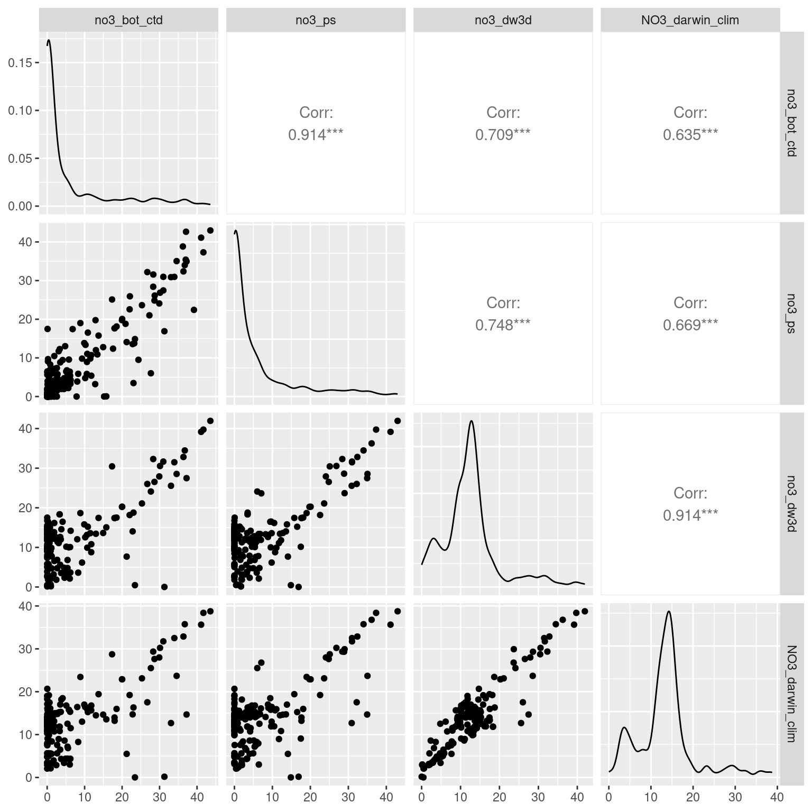
7.2 Chlorophyll a
Chlorophyll doesn’t seem to perform very well. But this makes sense also since it varies greatly on much shorter time and space scales that the models may have trouble resolving. Chlorophyll bottle data has the best correlation with Pisces (0.338)
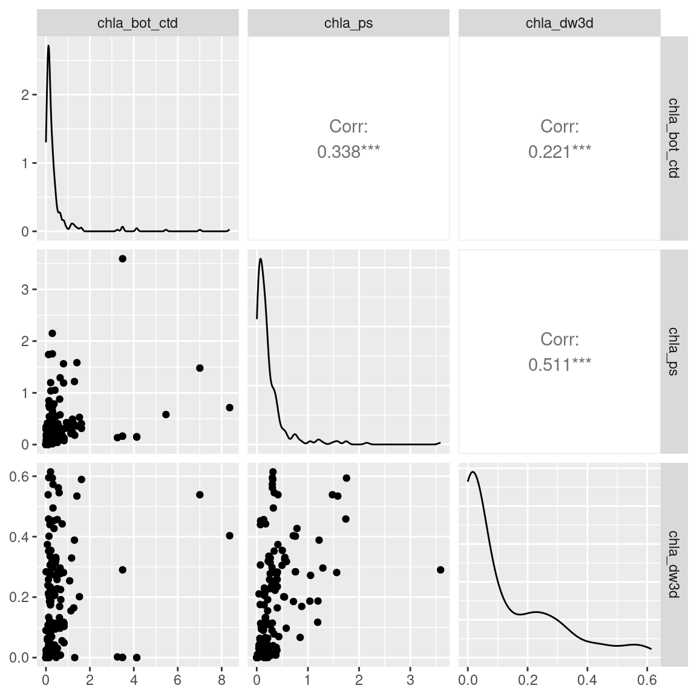
7.3 Nitrite
Nitrite is basically terrible. But only Darwin model even attempts to resolve nitrite anyway…
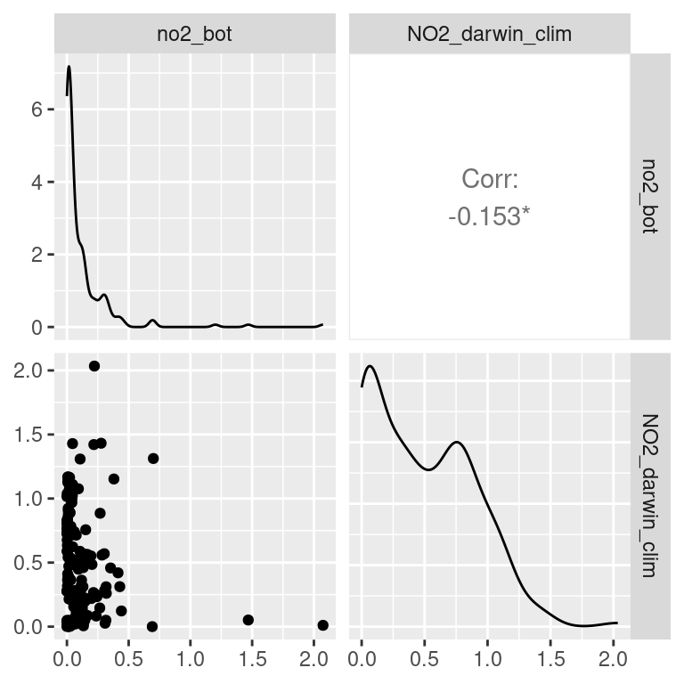
7.4 Oxygen
All models can match oxygen from the Tara samples well. Pisces does very well (correlation 0.886) but it is not the highest (0.962).
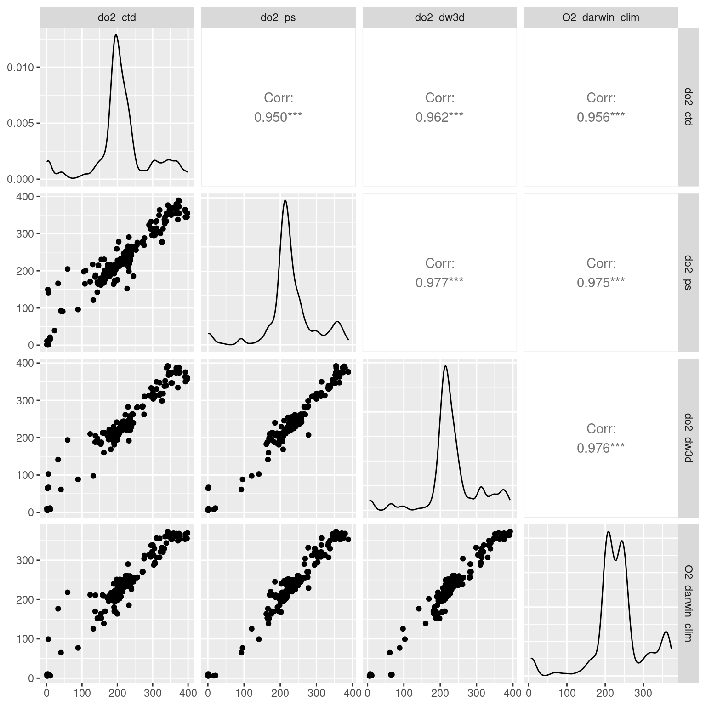
7.5 Phosphate
All models can match phosphate from the Tara samples well. Pisces does very well (correlation 0.886) but it is not the highest (0.902).
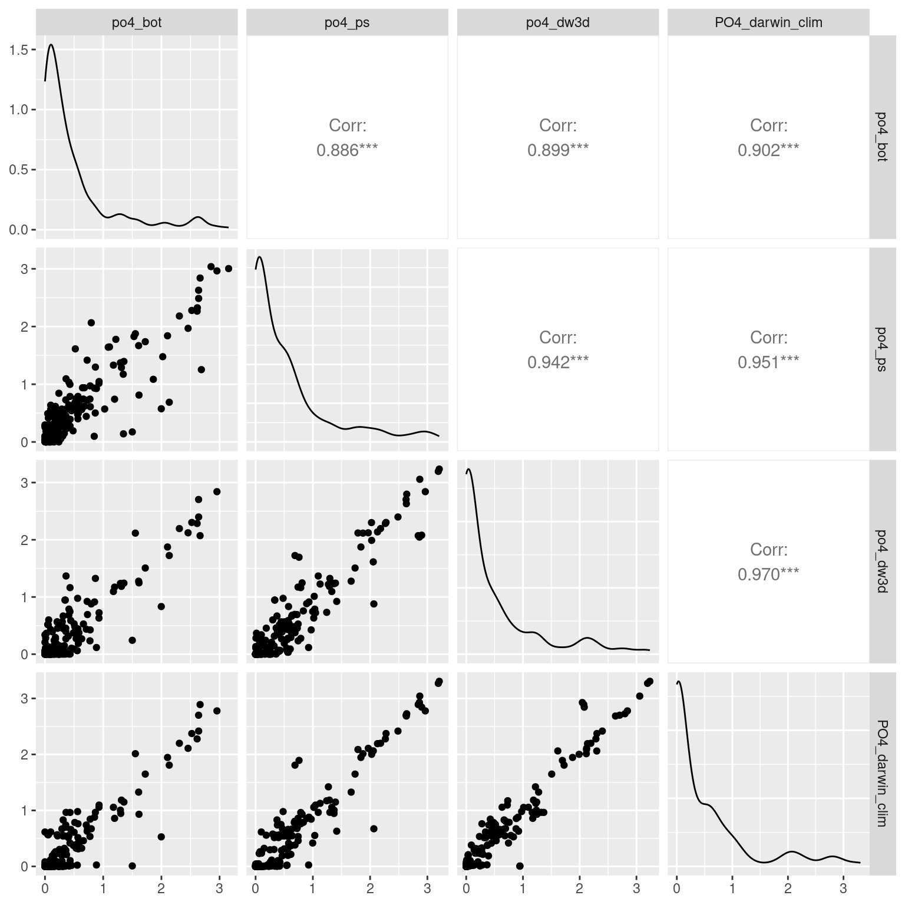
7.6 Silicate
All models can match silicate from the Tara samples well. Pisces does very well (correlation 0.92) but it is not the highest (0.949).
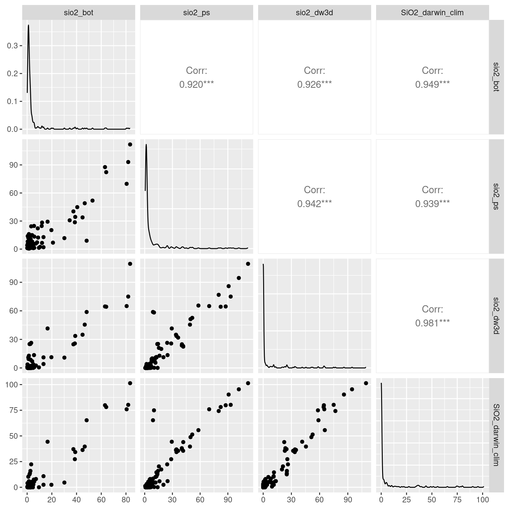